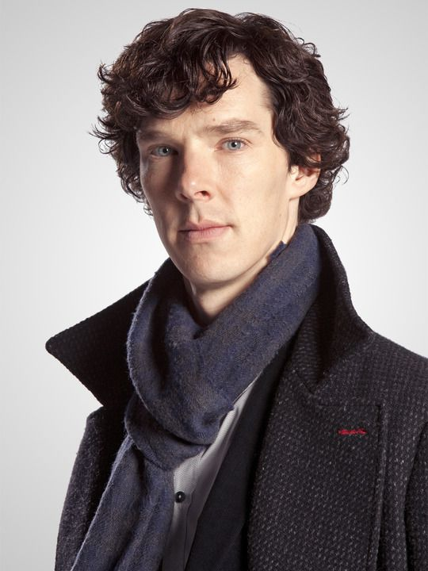
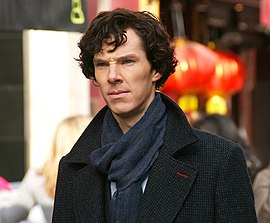

İngiliz yazar Arthur Conan Doyle tarafından yaratılan kurgusal bir dedektiftir . Hikayelerinde kendinden " danışman dedektif " olarak bahseden Holmes, gözlem, çıkarım, adli bilim ve fantastik sınırında mantıksal akıl yürütme konusundaki uzmanlığıyla tanınır ve bunları Scotland Yard da dahil olmak üzere çok çeşitli müşteriler için davaları araştırırken kullanır.
 | Edebiyat Bilgisi | 0 | |
| Felsefe Bilgisi | 0 | |
| Astronomi Bilgisi | 0 | |
| Siyaset Bilgisi | zayıf | |
| Botanik Bilgisi | Değişken. | Belladonna , afyon ve genel olarak zehirler konusunda iyi. Pratik bahçecilik hakkında hiçbir şey bilmiyor. |
| Jeoloji Bilgisi | Pratik, ancak sınırlı. | Bir bakışta farklı toprakları birbirinden ayırt eder. Yürüyüşlerden sonra, pantolonundaki lekeleri gösterdi ve renklerine ve kıvamlarına göre Londra'nın hangi bölgesinden aldığını söyledi. |
| Kimya Bilgisi | `Derin | |
| Sansasyonel Edebiyat Bilgisi | Muazzam | Yüzyılda işlenen her dehşetin her ayrıntısını biliyor gibi görünüyor. |
Sherlock Holmes , Arthur Conan Doyle tarafından 1854 yılında yaratılan ve dünyanın en çok bilinen kurgusal dedektifleri arasında yer alan Sherlock Holmes'den esinlenen film 2009'un Aralık ayında vizyona girdi. Yönetmenligini Guy Ritchie'nin yaptığı filmin baş rollerinde BAFTA Ödülleri ve Altın Küre sahibi Robert Downey Jr. ve ünlü İngiliz oyuncu Jude Law yer alıyor. 90 milyon dolar bütçeyle çekilen film gişelerde büyük ilgi görmüş ve 524 milyon dolar hasılat elde etmiştir. 2011 yılında devam filmi olan Sherlock Holmes: Gölge Oyunları vizyona girmiştir.
Sherlock, Mark Gatiss tarafından televizyon için geliştirilen Sir Arthur Conan Doyle'ın aynı adı taşıyan romanlarına dayalı Birleşik Krallık televizyon dizisi. Dizinin 90 dakikalık ilk bölümü 25 Temmuz 2010 günü BBC One televizyon kanalında, "Mini-Dizi" olarak yayımlanmaya başladı.